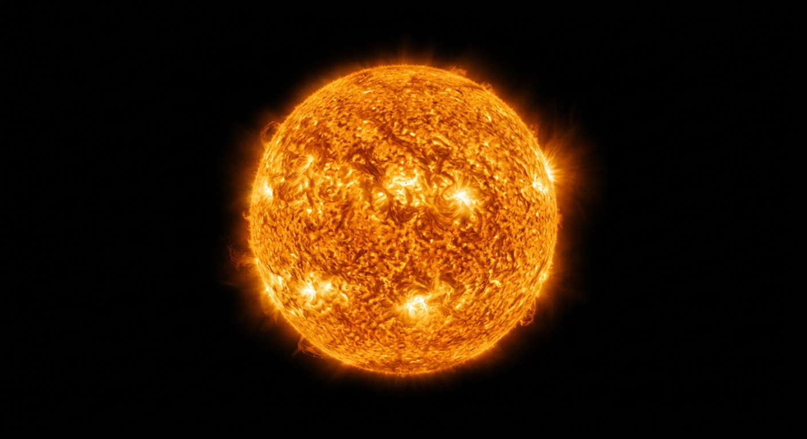

ดาวฤกษ์☀️
ในบางค่ำคืน โดยเฉพาะในคืนเดือนมืด เราจะสามารถมองเห็นดวงดาวจำนวนมากกระจายตัวอยู่ทั่วท้องฟ้า ซึ่งดาวเหล่านี้ส่วนใหญ่เป็น ดาวฤกษ์ ที่สามารถเปล่งแสงได้ด้วยตัวเอง และมีอยู่เป็นจำนวนมากในบริเวณ ทางช้างเผือก ทำให้บริเวณดังกล่าวดูมีดาวหนาแน่นและสว่างกว่าส่วนอื่นของท้องฟ้า
ㅤ
จำนวนดวงดาวที่เราสามารถสังเกตเห็นจากพื้นโลกนั้นอาจแตกต่างกันไป ขึ้นอยู่กับหลายปัจจัย เช่น ปริมาณเมฆ สภาพอากาศ แสงจากดวงจันทร์ รวมถึงแสงไฟจากเมืองและอาคารต่าง ๆ ซึ่งเรียกว่า มลภาวะทางแสง หากอยู่ในพื้นที่ที่มืดและห่างไกลจากเมือง
ㅤ
เราจะสามารถมองเห็นดาวได้มากและชัดเจนยิ่งขึ้น โดยดาวฤกษ์ที่เราคุ้นเคยมากที่สุดคือ ดวงอาทิตย์ ซึ่งเป็นดาวฤกษ์ที่อยู่ใกล้โลกมากที่สุดและเป็นแหล่งพลังงานสำคัญที่ทำให้สิ่งมีชีวิตบนโลกสามารถดำรงชีวิตอยู่ได้